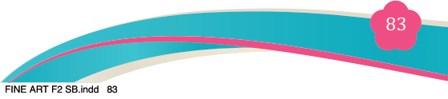
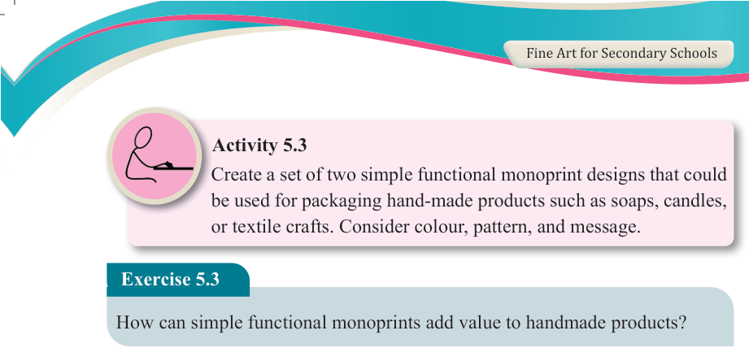
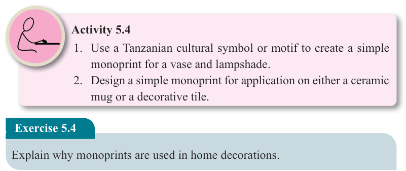

Fine Art for Secondary Schools

83

Student’s Book Form Two



Activity 5.3

Create a set of two simple functional monoprint designs that could be used for packaging hand-made products such as soaps, candles, or textile crafts. Consider colour, pattern, and message.
Exercise 5.3
How can simple functional monoprints add value to handmade products?
(c) Simple functional interior design monoprints
Monoprints can be used in home decoration to make everyday items look more beautiful and artistic. These prints give a personal, hand-made feel to
home objects. You can use monoprint designs on things like lampshades, wall
pictures, flower pots, decorative tiles, mugs, and furniture like chairs and
tables. For example, you can press natural textures such as leaves, animal skin
patterns, or tree bark onto these items to create interesting surface designs.
This adds a natural and creative touch to home interiors.
Activity 5.4
1. Use a Tanzanian cultural symbol or motif to create a simple monoprint for a vase and lampshade.
2. Design a simple monoprint for application on either a ceramic mug or a decorative tile.
Exercise 5.4
Explain why monoprints are used in home decorations.
(d) Marketing and promotional monoprints
Functional monoprints are used to create unique promotional materials that
stand out and engage customers. These items are such as business cards,
logos, posters and flyers. For example, a business company may choose
to use a monoprint design as part of their promotional materials to create a
distinctive and memorable visual identity. Figure 5.4 shows examples of the
YETU monoprint applied in various marketing and promotional items for the
YETU COMPANY logos, posters, labels and stickers.
04/08/2025 13:54